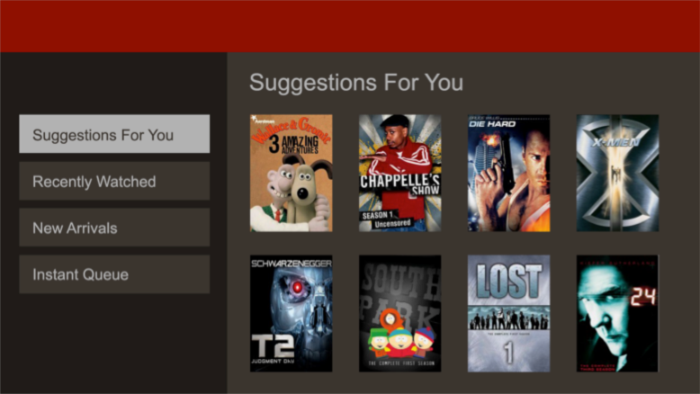
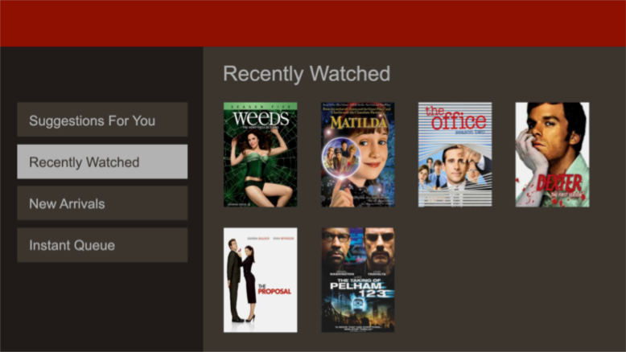
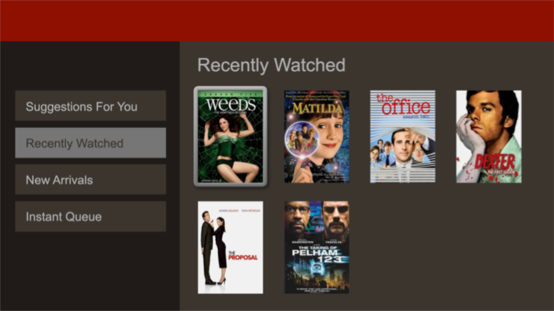

This UI Engineer exercise is designed to help us get a better sense of your front-end engineering skills and general approach to application architecture. Please consider one of these two options for the exercise:
Your submission’s functionality should satisfy the specification as well as possible. If some behavior is unspecified, draw upon your sense of user experience to fill in the blanks. Consider performance. Most Netflix streaming devices have a fraction of the CPU power and memory your computer has, and applications on the Netflix website compete with other applications for CPU time and memory.
Consider extensibility and maintainability. How easy is it to add a new component to the UI, or change the order of the navigation items? Could someone else easily understand your code and make these changes?
For purposes of this exercise, we don’t care about the visual style, animations, or pixel-perfect layout, but your product should closely resemble the wire frames (see Wire Frames).
We will test your submission in the latest production version of Google Chrome.
You should be able to achieve the desired effects without any 3rd party code, but you may find it convenient to use a library for DOM traversal and manipulation. Use your discretion in how much 3rd party code to use; we’re trying to figure out whether to hire you, not the library/framework author, so consider every component an opportunity to show off your chops.
Be clear about what code is and isn’t yours.
Submit your finished work by email to the hiring manager or recruiter who provided you with this exercise. It can be an archive file attached to your email or a URL to your solution on the web.
“Suggestions For You” nav item focused

“Recently Watched” nav item focused; content area changed to reflect nav item focus

“Recently Watched” content area item at row 0, col 0 focused; nav item is selected but not focused

This TV user interface responds only to the four arrow keys and Enter. There’s no mouse/cursor interaction. Generally, the arrow keys shift focus from one UI component to another, and Enter activates the focused component.
When the application starts, focus should be on the first navigation item in the main navigation.
The navigation bar on the left governs the content area. When focus lands on a navigation item, the content area should change to show the corresponding content.
There’s a separate content component corresponding to each navigation item, i.e. one for Suggestions For You, one for Recently Watched, etc. Each content area hosts up to eight pieces of movie box art, arranged in two rows of four columns. Focus can move between all eight, or move back to the navigation area.